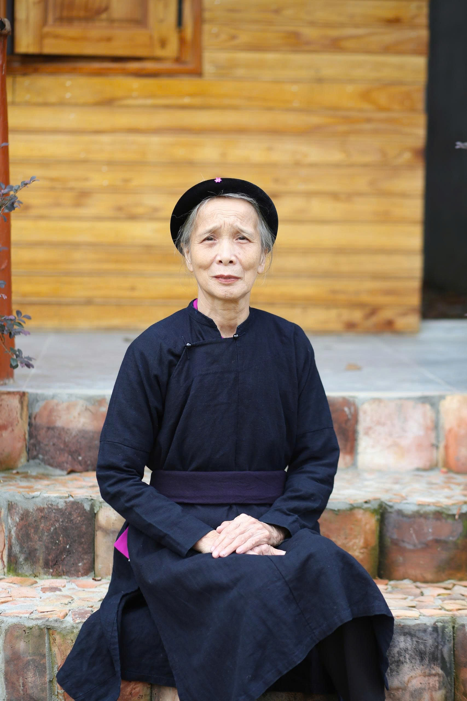
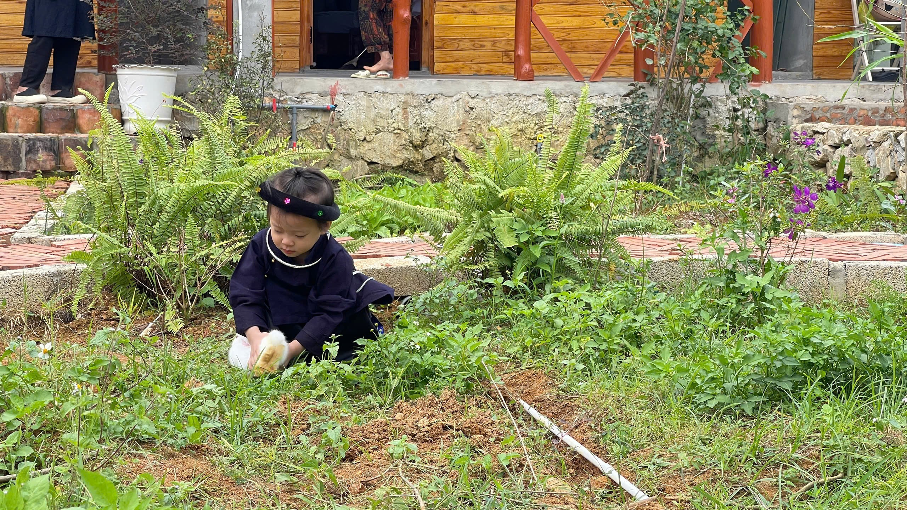
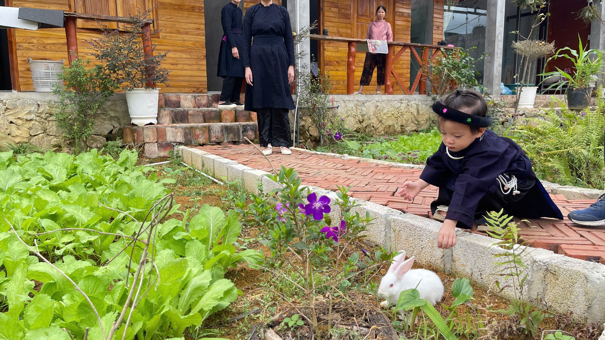
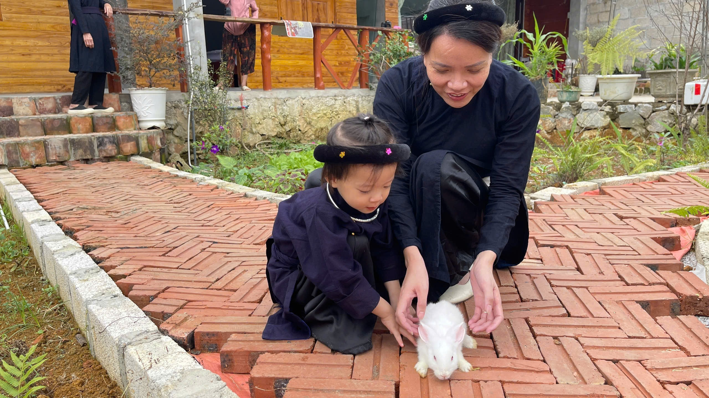
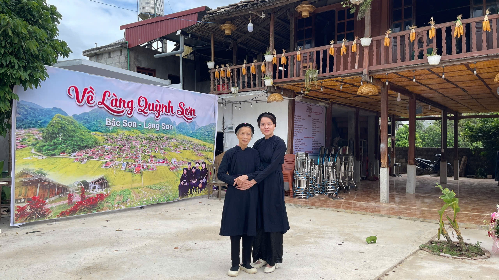
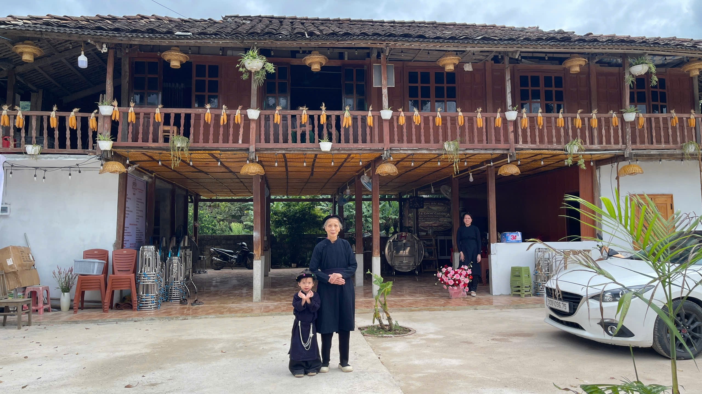
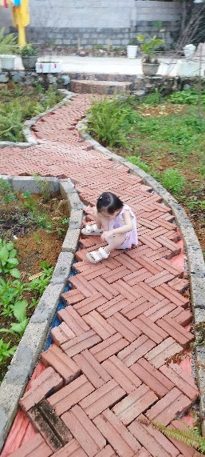

A Day at Grandma and Grandpa's Home with Dau Tay
Some days, there is no need to travel far. Coming back to visit Grandma and Grandpa, letting our little one play and spend time with loved ones, is enough to create a beautiful memory.

A day visiting Grandma and Grandpa gave our family a chance to step away from our usual routine and spend time together. For the adults, it was a visit to family. For Dau Tay, everything around her was something interesting to see and discover.
At her grandparents' home, she had room to play in the yard, look around the garden, and discover the familiar little things that make up everyday life. Nothing needed to be carefully arranged. These moments became lovely childhood memories simply because we captured them as they happened.

Childhood Is Made of Simple Things
A corner of the yard, a path through the garden, or a few moments playing with family can become a treasured photograph. Dau Tay may not remember every detail of that day when she grows older, but we will be able to look through these photos together and tell her about the time when she was little.






An Ordinary Day, A Memory to Keep
Our visit lasted just one day, but the photographs helped us preserve so many little moments. When Dau Tay grows older, these pictures will help her look back on the place where she played and the people who have always surrounded her with love.
Nha Minh Journal keeps days like these—not because they are extraordinary, but because they are a gentle part of our child's journey of growing up.
← Back to Nha Minh Journal